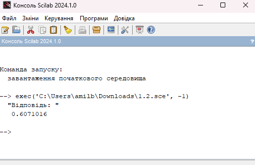
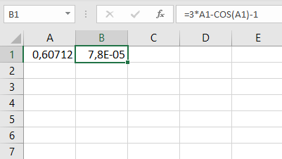

Завдання 1.2
Знайти за допомогою Scilab корінь рівняння чисельно і, якщо це можливо, аналітично. Виконати перевірку отриманого результату у MS Excel. Результати порівняти.
ВАРІАНТ 2
Функція:
\[y = 3*x - cos(x) - 1\]
Код Scilab:
1.2.sce
function y = myFunction(x)
y = 3*x - cos(x) - 1;
endfunction
x0 = 1;
x_solution = fsolve(x0, myFunction);
disp("Відповідь: ");
disp(x_solution);
Результат виконання програми у Scilab (рисунок 4):

Рисунок 4 - Вивід відповіді у середовище Scilab
Результат виконання роботи в Excel (рисунок 5):

Рисунок 5 - Таблиця Excel
Висновок
Порівнюючи отримані результаті у Scilab та Excel, відповідь майже ідентична в обох випадках. Похибка становить: 0,00002